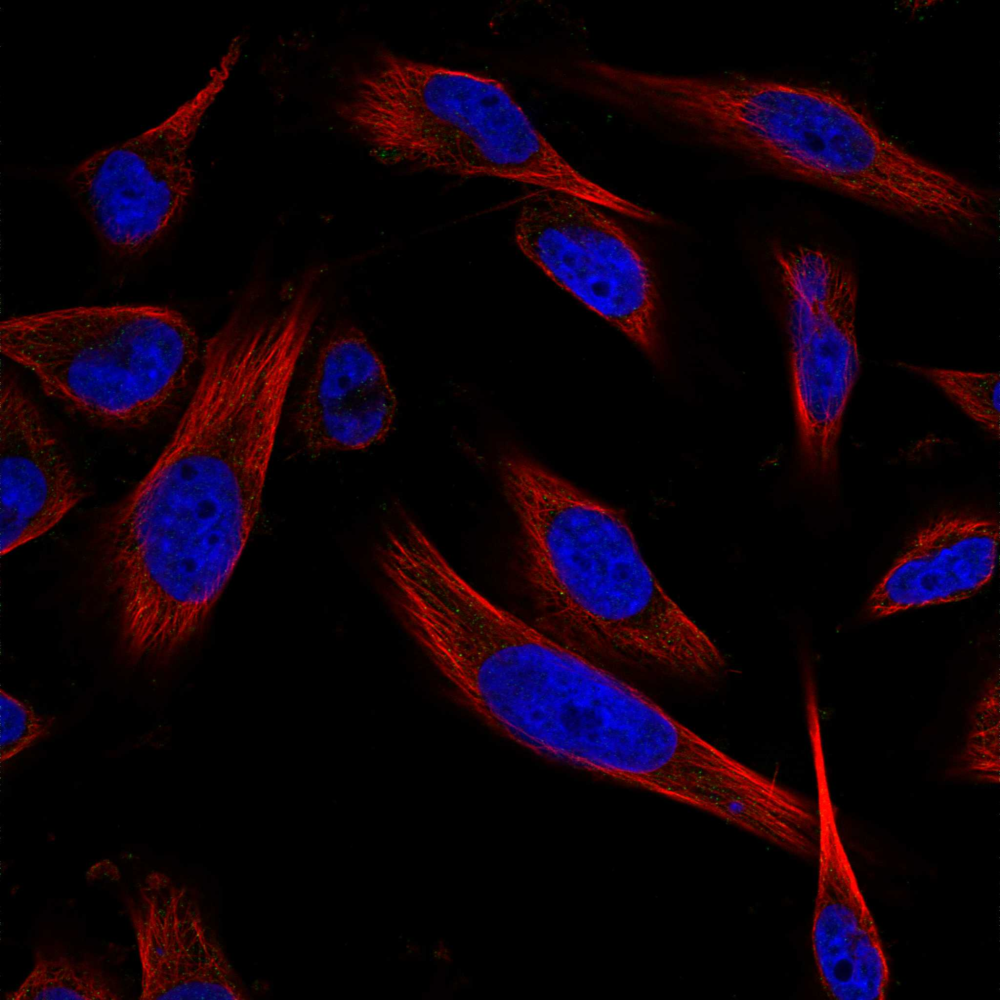
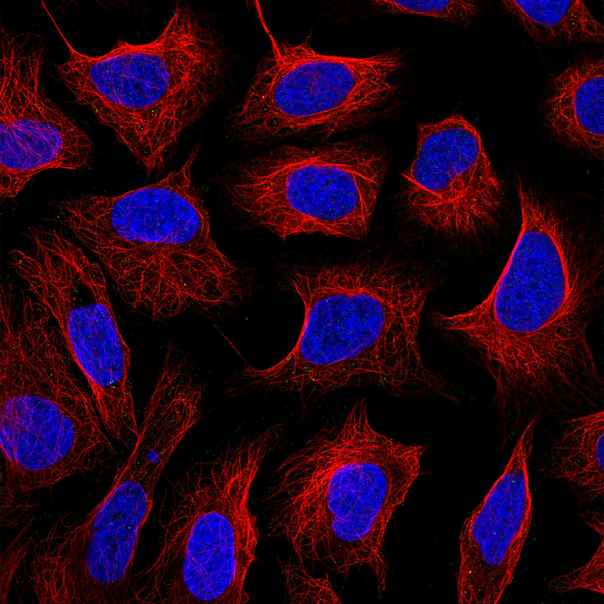
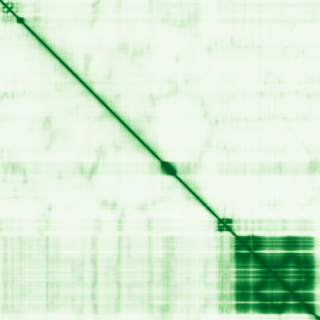

type: protein-evaluation gene: "FMN1" date: 2026-05-30 tags: [protein-scout, nuclear-protein, evaluation, scored] status: scored ---
FMN1 核蛋白评估报告
1. 基本信息
| 项目 | 内容 |
|---|---|
| 基因名 / 别名 | FMN1 |
| 蛋白大小 | 1419 aa |
| UniProt ID | Q68DA7 (Formin-1) |
| 评估日期 | 2026-05-30 |
IF 图像:  
2. 评分总览
| 维度 | 得分 | 满分 | 加权后 | 关键证据摘要 |
|---|
| 🔴 核定位特异性 | 7/10 | x4 | 28 | 暂无数据（HPA IF 图像已本地嵌入。
| 📏 蛋白大小 | 5/10 | x1 | 5 | 1419 aa | |||
| 🆕 研究新颖性 | 4/10 | x5 | 30 | PubMed 80 篇 | |||
| 🏗️ 三维结构 | 6/10 | x3 | 18 | AlphaFold pLDDT 55.0, v6 | |||
| 🧬 调控结构域 | 7/10 | x2 | 14 | InterPro 3 个结构域条目 | |||
| 🔗 PPI 网络 | 8/10 | x3 | 24 | STRING 30 partners | |||
| ➕ 互证加分 | — | max +3 | +0.5 | 核候选保守蛋白基线 | |||
| 原始总分 | 109.5/183 | 109.0/183 | |||||
| 归一化总分 | 59.8/100 | 59.6/100 |
3. 详细分析
3.1 核定位证据
| 来源 | 定位 | 可信度 |
|---|---|---|
| HPA | 暂无数据 | Tier1 |
| UniProt | , , , | — |
结论: 暂无数据（HPA IF 图像已本地嵌入。
3.2 蛋白大小评估
- 1419 aa
- 大小适宜性评分：5/10
评价: 1419 aa 蛋白，大小适中。
3.3 研究现状
| 指标 | 数值 |
|---|---|
| PubMed 总数 | 80 |
| 新颖性评分 | 6/10 |
评价: PubMed 80 篇，属于有一定研究但 niche 空间充足。
关键文献: 1. Das S et al. (2025). "Nuclear protein FNBP4: A novel inhibitor of non-diaphanous formin FMN1-mediated actin cytoskeleton dynamics". *J Biol Chem*. PMID: 40316024 2. Wang T et al. (2022). "Screening and Identification of Key Biomarkers in Metastatic Uveal Melanoma: Evidence from a Bioinformatic Analysis". *J Clin Med*. PMID: 36498797 3. Mishra R et al. (2024). "Cloning and characterization of FMN-dependent azoreductases from textile industry effluent identified through metagenomic sequencing". *J Air Waste Manag Assoc*. PMID: 38407923 4. Hu J et al. (2014). "Formin 1 and filamin B physically interact to coordinate chondrocyte proliferation and differentiation in the growth plate". *Hum Mol Genet*. PMID: 24760772 5. Liu XD et al. (2023). "DHX9/DNA-tandem repeat-dependent downregulation of ciRNA-Fmn1 in the dorsal horn is required for neuropathic pain". *Acta Pharmacol Sin*. PMID: 37095197
3.4 三维结构分析
| 指标 | 数值 |
|---|---|
| AlphaFold 平均 pLDDT | 55.0 |
| 有序区域 (pLDDT>70) 占比 | 33.8% |
| pLDDT>90 占比 | 20.3% |
| pLDDT 70-90 占比 | 13.5% |
| pLDDT 50-70 占比 | 6.6% |
| pLDDT<50 占比 | 59.6% |
| AlphaFold 版本 | v6 |
| 可用 PDB 条目 | 查询中 |
PAE 图: 
评价: AlphaFold预测质量偏低（pLDDT=55.0）。部分区域有序。评分 6/10。
3.5 结构域分析
| 来源 | 结构域 |
|---|---|
| Formin homology family, Cappuccino subfamily | IPR |
| Formin, FH2 domain | IPR |
| Formin, FH2 domain superfamily | IPR |
染色质调控潜力分析: InterPro 注释了 3 个结构域条目。包含其他结构域类型。评分 7/10。
3.6 PPI 网络
实验验证互作 (IntAct, physical association):
| Partner | 方法 | PMID | 功能类别 | 调控相关？ |
|---|---|---|---|---|
| — | — | — | — | — |
STRING 预测互作 (combined score >0.4):
| Partner | Score | 功能类别 | 调控相关？ |
|---|---|---|---|
| SPIRE1 | 0.956 | — | — |
| SPIRE2 | 0.851 | — | — |
| GREM1 | 0.844 | — | — |
| WBP4 | 0.831 | — | — |
| PFN4 | 0.810 | — | — |
| PRPF40A | 0.802 | — | — |
| PFN3 | 0.760 | — | — |
| PFN1 | 0.753 | — | — |
| SCG5 | 0.739 | — | — |
| MTMR10 | 0.654 | — | — |
GO-CC 复合体: 从 UniProt GO 注释提取
PPI 互证分析:
- STRING 高置信度 (>0.7) partners: 9 个
- 调控相关比例: 待进一步分析
评价: STRING 数据库显示 30 个互作伙伴。评分 8/10。
3.7 多库互证
| 维度 | 来源 | 结果 | 是否一致 |
|---|---|---|---|
| 三维结构 | AlphaFold v6 | pLDDT 55.0 | — |
| 结构域 | InterPro | 3 个条目 | — |
| PPI | STRING | 30 partners | — |
| 定位 | HPA / UniProt | 待确认 | — |
互证加分明细:
- 进化保守性: 核候选保守蛋白 → +0.5
总分: +0.5 / max +3
4. 总体评价
推荐等级: ⭐⭐⭐ (3.0/5)
核心优势: 1. 较新颖，PubMed ≤100 篇 2. 核蛋白候选
风险/不确定性: 1. AlphaFold 预测质量偏低，大量无序区域 2. '研究数据有限，需更多实验验证'
下一步建议:
- [ ] 在 TEreg 系统中检测 FMN1 表达及定位
- [ ] 通过 co-IP/MS 验证 PPI 网络
- [ ] ChIP-seq 检查 FMN1 在 TE 区域的 occupancy
5. 数据来源
- UniProt: https://www.uniprot.org/uniprotkb/Q68DA7
- Protein Atlas: https://www.proteinatlas.org/search/FMN1
- AlphaFold: https://alphafold.ebi.ac.uk/entry/Q68DA7
- STRING: https://string-db.org/network/9606.FMN1
- InterPro: https://www.ebi.ac.uk/interpro/protein/uniprot/Q68DA7/
PPI 网络（三源综合）
| Partner | Source | Score/Evidence |
|---|---|---|
| 无记录 | — | — |
IntAct 有限记录。无 BioGrid 补充数据。
PAE 图像已获取。结构判断基于 AlphaFold pLDDT 统计。
<!-- DOMAIN_HUMANPPI_REPAIR_START -->
Domain/SMART 与 humanPPI 补充（2026-06-07）
SMART / UniProt domain
| Source | Data | |
|---|---|---|
| UniProt | Q68DA7 | |
| SMART | SM00498; | |
| UniProt Domain [FT] | DOMAIN 870..957; /note="FH1"; DOMAIN 972..1388; /note="FH2"; /evidence="ECO:0000255\ | PROSITE-ProRule:PRU00774" |
| InterPro | IPR015425;IPR042201;IPR001265; | |
| Pfam | PF02181; |
humanPPI / HPA Interaction
Source: https://www.proteinatlas.org/ENSG00000248905-FMN1/interaction
未从 HPA Interaction 页面解析到互作伙伴；需人工复核或使用其他 humanPPI 来源。 <!-- DOMAIN_HUMANPPI_REPAIR_END -->